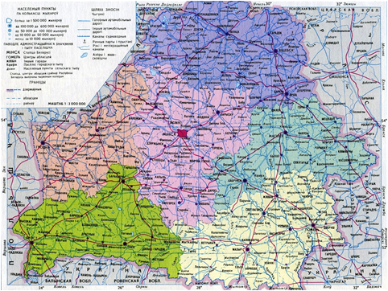
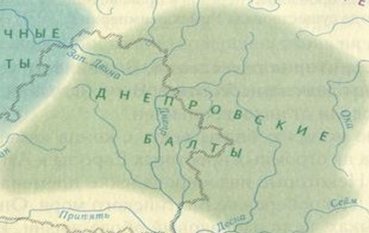
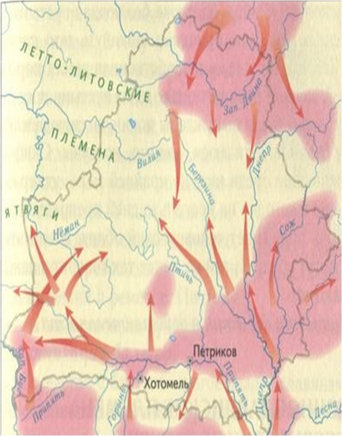
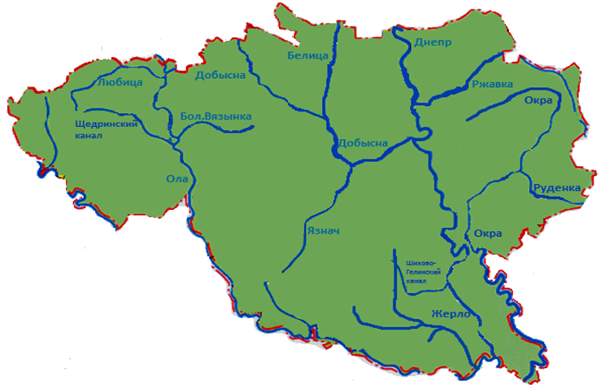

Известно, что с конца XVIII в. Жлобинщина входила в состав Российской империи. Именно тогда наш край выходит из неизвестности, именно тогда складываются предпосылки для рывка в будущее.
Племена Жлобина

Представьте, что было на нашей земле больше тысячи лет назад, до того, как здесь появились первые славяне. Эти земли не были пустыми. Их населяли древние племена — балты. Они были не похожи на славян ни по языку, ни по обычаям. Своё название они получили от Балтийского моря, возле которого жили их многочисленные родственники. Их главными племенами здесь были: Культура штрихованной керамики (жили на западе и в центре). Мы знаем их по особой глиняной посуде, украшенной узорами из штрихов. Днепровские балты (жили на востоке, включая нашу местность). Они селились по берегам Западной Двины и Днепра. А что насчёт нашей, Жлобинской, земли? Наша территория, эти поля и леса у Днепра, как раз была сердцем земель днепровских балтов. Именно они были нашими самыми первыми предками-земляками. Они жили в укреплённых поселениях, охотились в наших лесах, рыбачили в Днепре и верили в своих древних богов. Когда славяне начали переселяться с юга, они не выгнали балтов. Два народа начали постепенно смешиваться: заключали браки, перенимали друг у друга слова, обычаи и ремёсла. Так из этого слияния и родился тот народ, который позже стал называться белорусами.
Заселение Беларуси славянами: пути и племена
Жлобин

Территорию современной Беларуси славяне заселяли в течение нескольких веков, двигаясь преимущественно с юга на север, вдоль великого водного пути реки Днепр. Еще одним направлением была миграция с юго-запада, со стороны Карпат. Осваивая новые земли, славяне не вытесняли коренное население — балтские племена, а вступали с ними в тесное взаимодействие, что во многом определило уникальную культуру белорусского народа. Таким образом, наш родной Жлобинский край, расположенный в бассейне Днепра, стал одним из регионов активной славянской колонизации. Славяне-переселенцы, поднимаясь вверх по течению, прочно обосновались на этих землях. Летописи свидетельствуют, что территорию Беларуси заселили три крупных восточнославянских племенных союза. Кривичи освоили север и центр, основав Полоцк. Южные земли, включая большую часть Жлобинщины, заняли дреговичи, а на востоке, по реке Сож, расселились радимичи. Именно эти племена, смешавшись с древними балтами, стали предками современных белорусов и заложили основу нашей богатой истории.
Как вы видите, дома в Жлобине были деревянными. Из–за этого обстоятельства местечко не раз горело.
Вот где назодился Жлобин на картах.
Жлобин
Проскурни
Курганье
Октябрь
